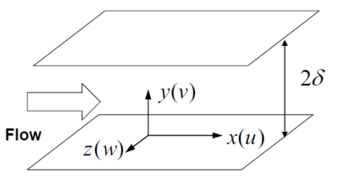
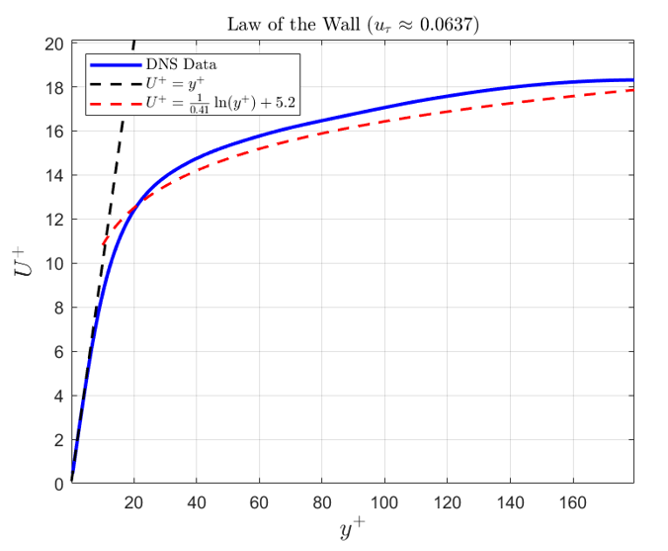
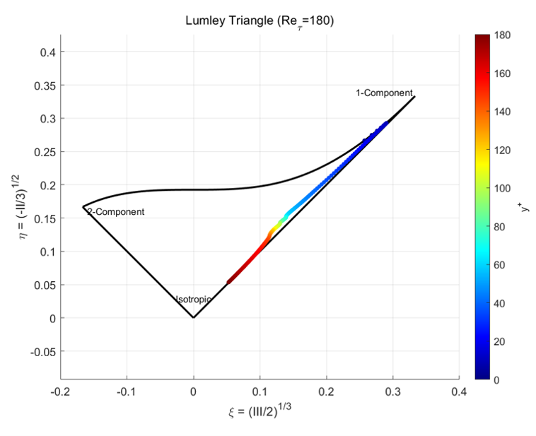
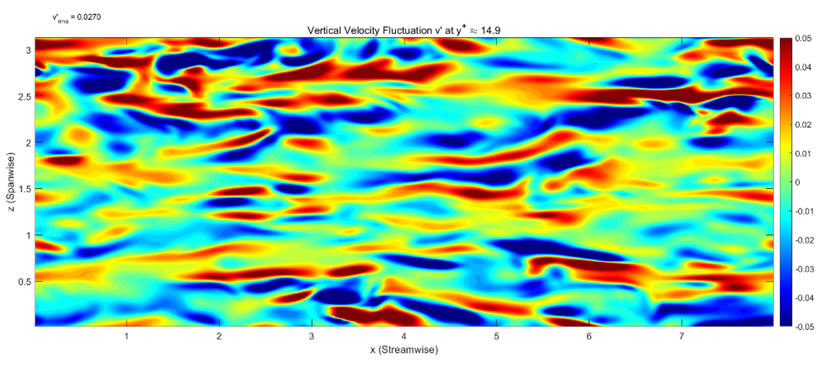
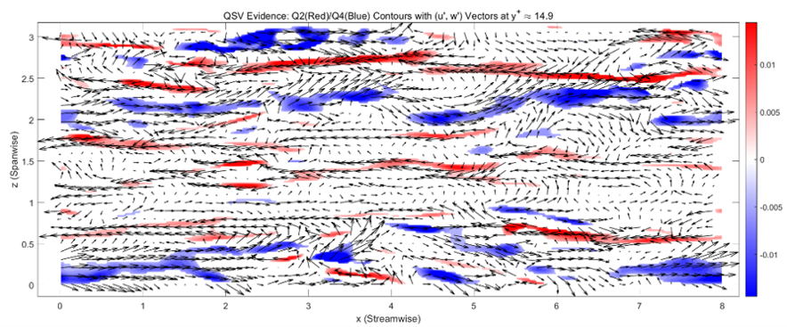

Channel Turbulent Boundary Layer Analysis
Project Overview
This course project investigates the turbulent boundary layer in channel flow using direct numerical simulation (DNS) data. The analysis focuses on the mean velocity profile, Reynolds-stress anisotropy and the near-wall ejection-sweep cycle. The objective is to relate classical wall-turbulence theory to the statistical characteristics and coherent structures observed in turbulent flows.

Mean Velocity Distribution
The mean velocity profile is first examined in wall units to identify the characteristic regions of turbulent channel flow. The DNS results are then compared with the classical law of the wall to assess the agreement between simulation data and theoretical predictions.
Viscous sublayer
In this region, viscous shear stress dominates the momentum transfer. For larger wall-normal distance, especially when y+ > 30, the velocity profile approximately follows the logarithmic law.
Log-law region
Farther from the wall, the DNS profile slightly deviates from the logarithmic law. This deviation is expected in channel flow because the derivation of the log law assumes an approximately constant total shear stress, while the total shear stress decreases nearly linearly with wall-normal position.

Lumley Triangle Analysis
To examine the geometric state of turbulence, the anisotropy of the Reynolds-stress tensor is analyzed using the Lumley triangle. The trajectory reflects how the turbulence structure changes from the wall toward the channel center.
Near-wall region: wall blocking strongly suppresses the wall-normal fluctuation v', so the turbulence tends toward a two-component state dominated by streamwise and spanwise fluctuations.
Buffer layer: the trajectory moves toward the one-component limit. The production term injects energy mainly into streamwise fluctuation u', producing a rod-like anisotropic state.
Core region: as the flow approaches the channel center, mean shear weakens and pressure-strain redistribution transfers energy from u' to v' and w'. The turbulence gradually recovers toward isotropy.

Ejection-Sweep Mechanism
The wall-normal velocity fluctuation v' shows strong intermittency in the near-wall region. Both ejection and sweep events appear as streamwise-elongated but spanwise-narrow structures. This fragmented morphology suggests that the vertical motion in the buffer layer is not simply caused by direct wall impact from large-scale outer-layer turbulence.
Instead, the small-scale structure indicates a local near-wall generation mechanism. Positive and negative v' regions appear side-by-side in the spanwise direction, which provides kinematic evidence for quasi-streamwise vortices: rotation naturally induces upward motion on one side and downward motion on the other side.


Q4 sweep events: the vector field shows clear spreading features in sweep regions. High-speed fluid moves toward the wall and is slowed by the wall constraint, so vertical compression is accompanied by horizontal spreading.
Q2 ejection events: the vector field shows local gathering features, corresponding to low-speed fluid being lifted away from the wall. These ejections are closely related to the upward branch of near-wall vortical motion.
Spanwise transport: between adjacent Q4 and Q2 regions, the in-plane arrows exhibit a strong spanwise component w'. This connects sweep and ejection events and supports the interpretation that quasi-streamwise vortices drive local rolling, lateral transport, and lifting.